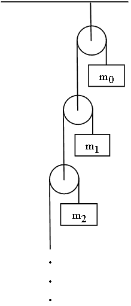

Questo è un problema che mi ha tenuto impegnato non poco. Purtroppo non avevo dimestichezza con le progressioni geometriche quindi mi sono fatto anche un bel ripasso sul quell'argomento!

Un sistema di pulegge infinite è disposto come in figura, con \(m_0=1/(1-t)\) e \(m_n=t^{n-1}\) con \(n>1\) e \(0<t<1\)
Nel momento iniziale quando il sistema inizia a muoversi, qual'è l'accelerazione di \(m_0\)?
\(nota\)
la seria geometrica (la somma di infiniti termini di una progressione geometrica) si scrive \(\sum_{k=0}^{n} r^k = \frac{1-r^{n+1}}{1-r}\)
Prego!
andrea964 apr 2015, 11:14
P. S. Comunque esiste anche una soluzione con mezzo calcolo che non utilizza le serie (come in quasi tutti i problemi di iterazione )
andrea964 apr 2015, 13:11
scusa! fai finta che non abbia detto niente :( ero mezzo addormentato e pensavo che le masse fossero tutte uguali! :lol: :lol: :lol:
CapitanFindus4 apr 2015, 15:13
ahahah infatti mi stavo scervellando per capire a che soluzione ti riferissi! ho pensato: proprio un genio se riesce a farlo con un calcolo e basta!
Tex965 apr 2015, 10:29
Per caso viene qualcosa del genere: \(a=g{2t-1 \over{} 2t+1}\)?
Carlo965 apr 2015, 11:05
a me viene 0!! Possibile??
Tex965 apr 2015, 11:20
Però così non consideri che \(m_k\) è diverso da \(\sum_{i=k+1}^\infty m_{i}\) per \(t\neq1/2\) e che quindi le altre masse cominciano a muoversi..
Carlo965 apr 2015, 11:30
Ma per risolvere il problema non serve considerare che le altre masse si muovono. Tutto ciò che sta appeso dall'altra parte di m0 è soggetto a due sole forze esterne, la massa totale moltiplicata per g e la tensione che viene applicata anche a m0. Se calcoli la massa totale trovi che è uguale a m0 e quindi m0 non si muove se inizialmente era ferma.
andrea965 apr 2015, 15:05
Carlo96 ha scritto:Ma per risolvere il problema non serve considerare che le altre masse si muovono. Tutto ciò che sta appeso dall'altra parte di m0 è soggetto a due sole forze esterne, la massa totale moltiplicata per g e la tensione che viene applicata anche a m0. Se calcoli la massa totale trovi che è uguale a m0 e quindi m0 non si muove se inizialmente era ferma.
Quindi secondo te se abbiamo un sistema in cui ai capi di una puleggia ci sono una massa e un altra puleggia ai cui due capi ci sono due masse la cui somma è uguale alla massa attaccata alla prima puleggi, quest ultima resta ferma perchè la massa totale attaccata dall altra parte è uguale? Fatti il conto e vedi se è vero... se non lo è datti una giustificazione.
andrea965 apr 2015, 16:34
Scusa forse sono ancora rimbambito dal pranzo pasquale ma... quanto vale \(m_1\)
Carlo965 apr 2015, 16:44
M1 vale 1. Nel tuo esempio quello che ho detto io non è vero, ma non so se è la stessa cosa che c'è nel problema. A te cosa viene??
andrea965 apr 2015, 16:52
No questo problema non ho ancora provato a farlo. Comunque quell esempio lo avevo fatto per farti capire che il fatto che la somma delle masse a destra è uguale a quella iniziale non implica che qualla iniziale resta ferma poichè se cosi fosse i moti delle masse a destra genererebbero una tensione nella seconda corda che non è la metá di quella nella prima. Invece come dice tex96, se ogni massa è la somma di tutte quelle successive allora il sistema resta fermo, perchè in questo modo puoi capire facilmente che ogni tensione è la metá della precedente. Di cknseguenza facendo questo problema bisogna aspettarsi che il risultato si riduca a zero quando t è 1/2. Ma per altri valori di t non deve venire zero.
andrea965 apr 2015, 16:53
Comunque perchè \(m_1=1\)?
Carlo965 apr 2015, 16:56
Perché t^0=1
andrea965 apr 2015, 17:00
Si ma il testo dice che quella progressione vale per n>1. Per n=1 non puoi applicarla!
Carlo965 apr 2015, 17:03
Sai che hai ragione, non so perché ma ho dato per scontato che 1 fosse ammesso. Allora proprio non saprei!!
Simone2565 apr 2015, 17:06
Credo sia un typo :)
A me la soluzione viene tipo:
\(\displaystyle a=g \frac{(2t-1)^2}{4t^2-6t+1}\)
Positiva se sale :roll:
andrea965 apr 2015, 17:06
Carlo96 ha scritto:Sai che hai ragione, non so perché ma ho dato per scontato che 1 fosse ammesso. Allora proprio non saprei!!
Per 5 minuti hai pensato che ero completamente scemo vero?? :lol: no non lo sono! O almeno... lo spero :lol: :lol:
Comunque spero sia un errore di battitura.
Simone2565 apr 2015, 17:09
CapitanFindus ha scritto: con \(n>1\)
Quello che intendo dire è che sono andato a fiducia che questo sia in realtá un \(\geq\) :P
P.s. Non ho usato la formula della somma di una progressione geometrica, quindi boh :|
Carlo965 apr 2015, 17:11
E invece sono scemo io!!! :lol:
andrea965 apr 2015, 18:15
Ho appena fatto il problema e mi viene lo stesso risultato di simone! Nemmeno io usato la serie ed ero sicurissimo di non averne bisogno. Il problema secondo me è molto bello perchè per farlo (almeno come l ho fatto io) ci vogliono molte idee furbe e un paio di assunzioni per niente banali.
andrea965 apr 2015, 18:22
P. S. Comunque (almeno per la mia soluzione ) non è necessario che m0 abbia quel valore. Qualunque valore diate a m0 riuscite a trovare una soluzione.
Simone2565 apr 2015, 18:23
Ottimo 8-)
Attendiamo una conferma o una smentita :lol:
CapitanFindus5 apr 2015, 19:31
complimenti a Simone e ad Andrea! il risultato è giusto
postate la vostra soluzione!
sono proprio curioso di vedere come avete fatto a farlo senza le serie
formalmente la soluzione sarebbe
per t ≥1/ 4 , a = −g ,
per t =1/2 , a = 0
e per altri valori di t , a = g/[ 1 - 2t/ (1-2t)^2 ]
andrea965 apr 2015, 19:36
Se posso mettere solo l impostazione e i conti ognuno se li fa per se la posto subito. Altrimenti lascio l onore (e l onere) a simone :D
andrea965 apr 2015, 21:37
Provo a spiegarlo cercando di essere più chiaro possibile e rischiando anche di essere pignolo visto che alcuni punti del procedimento se non vengono giustificati bene possono sembrare assunzioni campate in aria. Come ho detto salto la risoluzione delle equazioni che mi vengono alla fine tanto quelle potete farle da voi.
Innanzi tutto... LEMMA DEL DADO: cos'è? se lo cercate su wikipedia non esiste, se lo cercate su un qualsiasi libro non esiste... ma esiste! esiste perchè è il nome con cui io e qualche altro ragazzo definiamo un tipo di risoluzione in cui si sfrutta il fatto che un problema è iterativo ( il nome viene dal fatto che il principale problema di questo tipo è quello in cui si chiede la probabilità di vittoria se lanciano un dado si vince con 5,6 si perde con 1,2,3 e si rilancia con 4 ); cosa c'è qui di iterativo? beh, il fatto che passando da una puleggia alla successiva la situazione è identica a meno di qualche fattore ( che è il punto piu interessante della soluzione ); innanzi tutto notiamo che da \(m_1\) in poi ogni massa si ottiene dalla precedente moltiplicandola per \(t\); per convenzione chiamo livello \(k\) quello in cui c'è un puleggia a cui è attaccata la massa numero \(k\).
Osserviamo prima il livello zero: La corda ha una tensione \(T_0\) e la massa ha un accelerazione ( che prendo positiva verso l'alto ) \(a_0\); dall'altra parte è attaccato tutto quel sistema di altre carrugole che avrà un influenza sul moto di \(m_0\), quest'influenza la schematiziamo con una massa fittizia \(M\) che non ci è dato conoscere. IMPORTANTE: \(M\) non è la somma di tutte le masse dall'altra parte visto che non c'è una giustificazione sensata per dire una cosa del genere! \(M\) è l'analogo di una resistenza equivalente in elettrodinamica, riproduce gli effetti del sistema e possiamo conoscerla solo a posteriori, non possiamo fare ipotesi a priori sul valore di \(M\), però è importantissimo capire da cosa dipende \(M\): certamente è proporzionale alle masse che si trovano dall'altra parte, infatti si immaginassimo di moltiplicare tutte le masse dall'altra parte per un certo fattore, sicuramente l'influenza di tutto quel sistema di masse sulla prima cambierebbe di quel fattore; cosa ancora più importante: può dipendere dall'accelerazione di gravità? no! infatti l'influenza di tutte quelle masse sulla prima è \(Mg\) e se immaginassimo di diminuire la gravità l'influenza diminuirebbe linearmente con essa dunque \(M\) non può dipendere da \(g\).
Ora scriviamo le equazioni per il livello zero: \(a_0 m_0=T_0-m_0 g\) \(a_0 M=Mg-T_0\).
Ora passiamo al livello 1: prima cosa banale da dire è che il fatto che la carrugola sia prima di massa implica che la risultante su di essa deve essere nulla, dunque \(T_1=T_0 /2\) visto che la forza \(T_1\) è applicata sulla carrugola da entrambe i lati.
Ora mettiamoci nel sistema di riferimento della carrugola 1, qui \(m_1\) si muove verso l'alto con un accelerazione \(a_1\), mentre dall'altra parte abbiamo una massa fittizia \(M'\). Ora due considerazioni importanti: 1) la considerazione sul livello due la sto facendo in un sistema non inerziale che si muove verso il basso con accelerazione \(a_0\) quindi nelle equazioni del moto dobbiamo aggiungere a ogni massa \(m\) una forza apparente traslazionale verso l'alto, \(ma_0\), 2) la massa fittizia \(M'\) non è una nuova incognita, ma è legata alla massa fittizia \(M\), ed è qui che utiliziamo finalmente il famigerato lemma del dado: infatti se guardiamo il sistema al livello 1 è ignoriamo ciò che c'è sopra, la situazione è analoga a quella nel livello zero solo che le masse a destra sono tutte moltiplicate per \(t\) e c'è una forza apparente che però possiamo intelligentemente considerare alla stregua di una diminuzione dell'accelerazione gravitazionale che diventa quindi \(g'=g-a_0\), e visto che abbiamo detto che le masse fittizie devono essere indipendenti dalla gravità, questa nuova massa fittizia non è influenzata dalla forza apparente ma solo dal fattore \(t\) che moltiplica tutte le masse; quindi \(M'=Mt\).
Siamo allora pronti per scrivere le equazioni del secondo livello: \(a_1m_1=\frac{T_0}{2}-m_1(g-a_0)\) \(a_1Mt=Mt(g-a_0)-\frac{T_0}{2}\)
Praticamente abbiamo finito! riassumo le equazioni che ho trovato: \(a_0 m_0=T_0-m_0 g\) \(a_0 M=Mg-T_0\) \(a_1m_1=\frac{T_0}{2}-m_1(g-a_0)\) \(a_1Mt=Mt(g-a_0)-\frac{T_0}{2}\)
che costituiscono un sistema di 4 eq. 4 incognite nelle variabili \(a_0\), \(T_0\), \(M\) e \(a_1\); se vi interessa potete anche trovarvele tutte ma lo scopo del problema è quello di trovare \(a_0\) che viene: \(a_0=\frac{4t^2-4t+1}{4t^2-6t+1}\).
Se co sono punti che non avete capito dite pure :D
Simone2565 apr 2015, 23:51
Mammamia io sinceramente non avrei avuto voglia di scrivere tutto questo! Il mio procedimento comunque è identico e posso vantarmi di essere uno dei portatori della novella del Lemma del Dado :lol: .
Comunque meriti tu di impossessarti del testimone anche perchè or ora ho in mente solo vecchi problemi di senigallia (che è quello che sto facendo negli ultimi giorni) e dubito possano interessare molto visto che li potete trovare quando volete!
Comunque complimenti a CapitanFindus per il problema davvero molto molto bello :)
6frusciante96 apr 2015, 12:49
@andrea96 Scusa la mia ottusaggine ma potresti scrivermi ( anche in mp ) cos'è e a cosa serve la massa fittizia \(M\) ? Grazie
Simone2566 apr 2015, 16:12
Se vuoi ti rispondo io! Il sistema costituito da un infinito numero di pullegge si comporta in maniera strana! Ha una massa molto grande ma parti di questa sono accellerate verso il basso con valori diversi e molto incasinati! Così se tu avessi un numero stragrande di resistenze e metti un generatore ai capi del circuito, ti risulterá facile (misurando la corrente) dare un valore R riassuntivo che assume la funzione di resistenza equivalente! In questo caso tu fai finta che a sinistra al posto macello ci sia una massa M che assume (sia in termini di inerzia che in termini gravitazionali) le stesse caratteristiche! :)
andrea966 apr 2015, 16:23
Lo scrivo qui così lo chiarisco per tutti. La massa fittizia è una massa che messa al posto di tutta la parte del sistema dopo di quella non cambia nulla nella parte del sistema prima di quella. Non ha un interpretazione fisica rilevante ma è utile per risolvere il problema per io fatto che riesci a trovare una relazione semplice tra le masse fittizie di due livelli successivi. Teoricamente infatti potresti anche anche schematizzare l azione del sistema al dilá di una massa con una forza F, ma faresti piu difficoltá a dedurre una relazione tra le F di due livelli successivi.
P. S. Non pensare che l idea di mettere la massa fittizia mi sia venuta in mente per magia, l idea di sostituire un sistema complesso con qualcosa di più semplice è molto utilie e usata in fisica, l esempio piu classico è il metodo delle immagini in elettrostatica. Se sei abituato a fare cose nel genere è piu probabile che in un problema del genere ti venga in mente di sostutuire un sistema complesso con una massa che riproduce la stessa cosa.
se c'è qualcosa che non ti è chiaro chiedi pure.
andrea966 apr 2015, 16:25
Perfetto mentre scrivevo ha risposto anche simone! Ora hai due spiegazioni dai è meglio :lol: :lol:
CapitanFindus6 apr 2015, 17:25
Tanto di cappello! E' una soluzione molto interessante che richiede molto intuito sopratutto.
Vi stavo per scrivere la mia ma forse è meglio che vi posto la soluzione ufficiale del problema ( che ho tratto dalla fisica di Feynman ) anche se è in inglese.
(questa soluzione è molto più noiosa rispetto a quella proposta da andrea e simone)
aspetto caldamente il prossimo problema della staffetta!!!
andrea966 apr 2015, 18:28
Va bene allora stasera posti un problemino! :D
6frusciante96 apr 2015, 19:21
Grazie per le risposte ... Adesso ho capito anche se il paragone elettromagnetico per me é un po' inutile dato che sono in seconda e ho finito ora il quinto capitolo dell'Halliday (fisica 1)